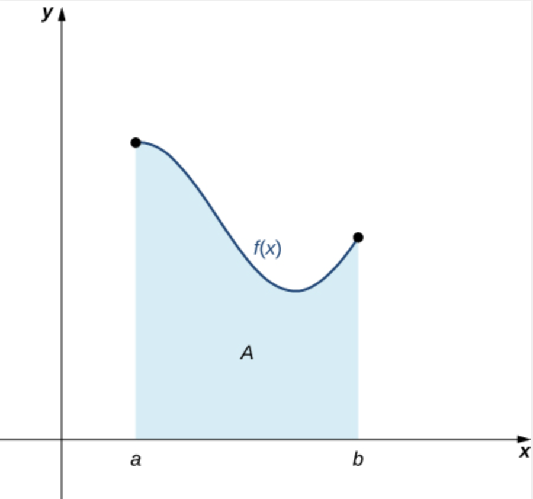
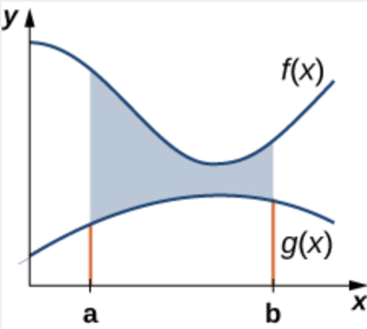
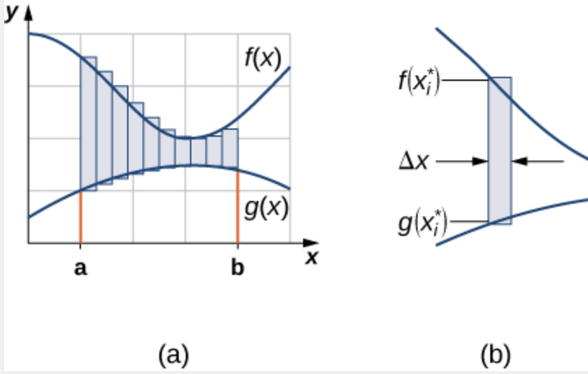
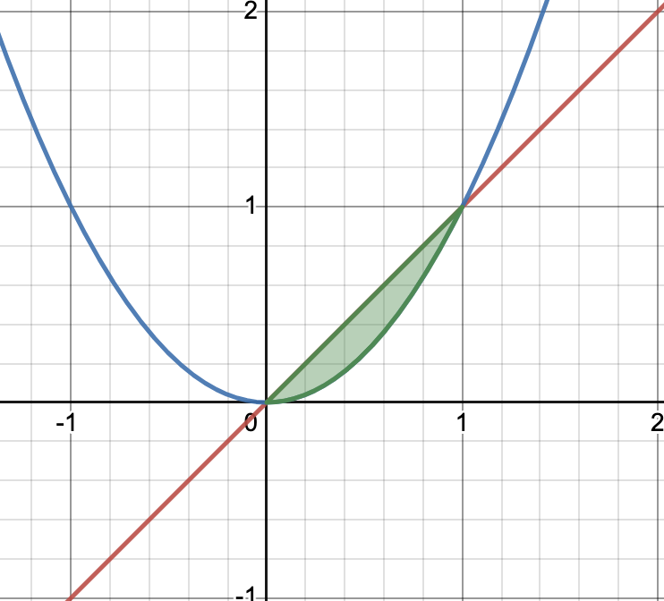
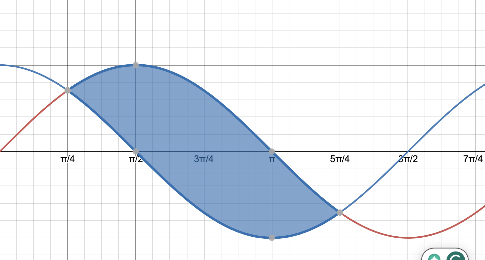
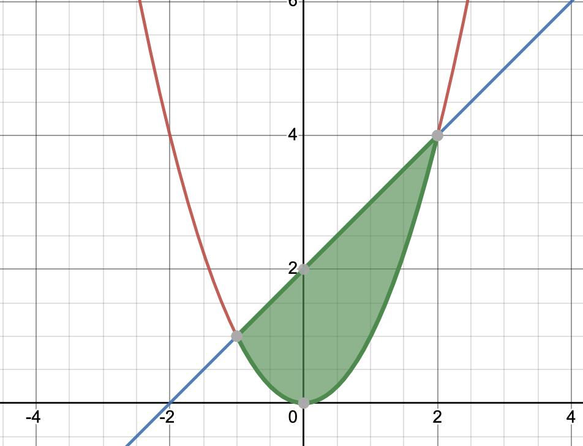
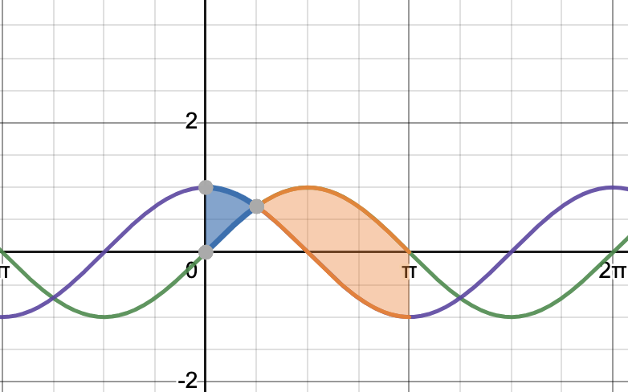
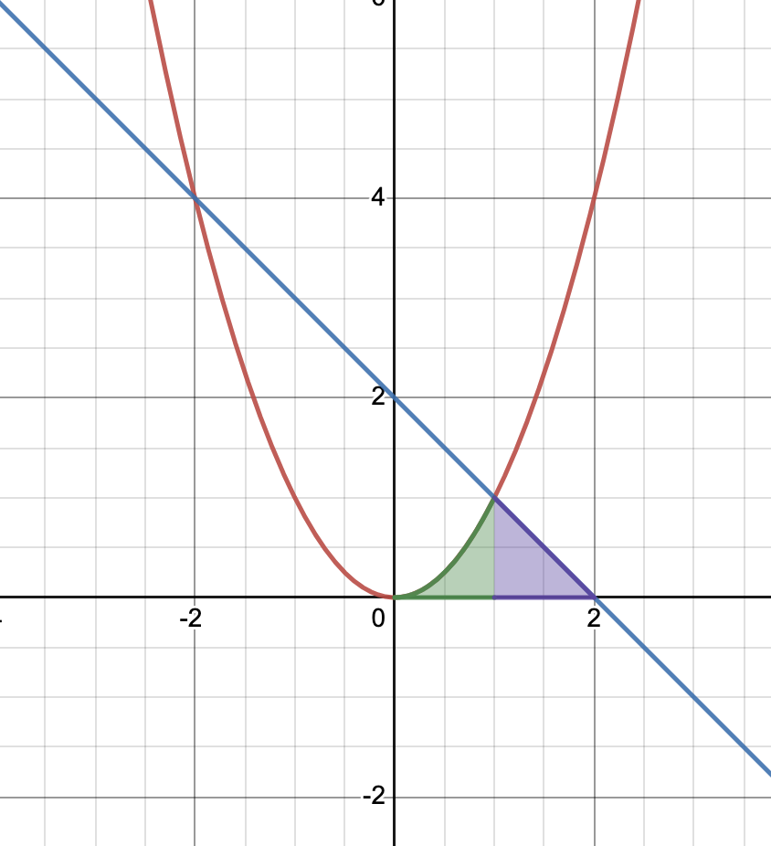

Previously, we have seen how calculus can help us generalize ideas from geometry. In geometry, we know how to find the area of “flat” shapes, like rectangles. But in calculus, we know how to find areas of regions where the top side is curved:

Now we will learn about how to find areas of regions where the top and bottom sides are both curved:

The idea is to split the region into rectangles, the same way we do with areas under curves. When we split the region into rectangles, we approximate the area of the region as:

\[\sum_{i = 1}^n (f(x_i) - g(x_i)) \Delta x\] As \(n \rightarrow \infty\) the limit of these approximations becomes the actual area, and we get the definite integral \(\int_a^b (f(x) - g(x)) dx\).
Example
Find the area of the region between the curves \(y=x\) and \(y=x^2\) from \(x=0\) to \(x=1\).

Since \(x>x^2\) in this region, we set up the integral \(\int_0^1 (x - x^2) dx\). Computing the integral, we get \(\left. \frac{x^2}{2} - \frac{x^3}{3} \right|_0^1\), which is \(\frac{1}{2} - \frac{1}{3}\), or \(\frac{1}{6}\).
As another example, let’s find the area between \(y=sin(x)\) and \(y=cos(x)\) from \(x = \frac{\pi}{4}\) to \(x = \frac{5\pi}{4}\):

Since \(sin(x)>=cos(x)\) here, we compute the integral \(\int_{\pi/4}^{5\pi/4} (\sin(x) - \cos(x)) dx\). This is \(-\cos(x)-\sin(x)\) from \(x = \frac{\pi}{4}\) to \(x = \frac{5\pi}{4}\). Plugging in the endpoints:
\[\begin{aligned}
& (-\cos(5\pi/4) - \sin(5\pi/4)) - (-\cos(\pi/4) - \sin(\pi/4)) \\
&=(\frac{\sqrt{2}}{2} + \frac{\sqrt{2}}{2}) - (-\frac{\sqrt{2}}{2} - \frac{\sqrt{2}}{2}) \\
&= \sqrt{2} + \sqrt{2} \\
&= 2\sqrt{2}
\end{aligned}\] Exercises
Find the area between the curves \(y=x\) and \(y=2-x\) from \(x=0\) to \(x=1\)
Find the area between the curves \(y=x\) and \(y=x^3\) from \(x=0\) to \(x=1\)
What do we do if we have a region enclosed by curves, but we do not know the boundary points ahead of time? In that case, we first need to find the points where the curves intersect using algebra.
That is, in general, the steps to problems where we find the area of a region enclosed by two curves are as follows:
Find the points where the curves intersect. Call these points \(x=a\) and \(x=b\).
Determine which curve is above the other between \(a\) and \(b\). Call that one \(f(x)\), and the other one \(g(x)\).
Set up the integral and integrate: \(\int_a^b (f(x) - g(x)) dx\) .
Example
As an example, find the area of the region enclosed by \(y=x^2\) and \(y=x+2\). The first step is to find where the curves intersect. We do this with algebra: \(x^2=x+2\) means that \(x^2-x-2=0\). Solve this by factoring: \((x-2)(x+1)=0\), so \(x=2\) or \(x=-1\). Then graph and see which curve is above the other between \(x=-1\) and \(x=2\).

We can see that \(x+2>=x^2\) here. So we set up the integral \(\int_{-1}^2 (x+2 - x^2) dx\). We integrate and we get \(\frac{x^2}{2} + 2x - \frac{x^3}{3}\). Plugging in the end points: \[\begin{aligned}
&(\frac{4}{2} + 4 - \frac{8}{3}) - (\frac{1}{2} - 2 + \frac{1}{3}) \\
&=(6 - \frac{8}{3}) - (\frac{3}{6} - \frac{12}{6} + \frac{2}{6}) \\
&=(\frac{10}{3}) - (-\frac{7}{6}) \\
&=\frac{27}{6} = \frac{9}{2} = 4.5
\end{aligned}\] Exercises
Find the area of the region bounded by \(y=4\) and \(y=x^2\)
Find the area of the region bounded by \(y=x^3\) and \(y=x^2\)
Please look at problems 1 and 2 in section 2.1 of the textbook.
Some problems require us to split the region up into smaller regions, and set up integrals for each. For example: find the area between \(y=sin(x)\) and \(y=cos(x)\) from \(x=0\) to \(x=\pi\).

We can see that from \(x=0\) to \(x=\frac{pi}{4}\), \(\sin(x) \leq \cos(x)\), and from \(x=\frac{pi}{4}\) to \(x=\pi\), \(\sin(x) \geq \cos(x)\), so we set up two integrals: \[\displaystyle\int_0^{\pi/4} (\cos(x) - \sin(x)) dx + \displaystyle\int_{\pi/4}^{\pi} (\sin(x) - \cos(x)) dx\] Integrating:\[\begin{aligned} &\left.[\sin(x) + \cos(x)]\right|_0^{\pi/4} + \left.[-\cos(x) - \sin(x)]\right|_{\pi/4}^\pi \\ &= [(\frac{\sqrt{2}}{2} + \frac{\sqrt{2}}{2}) - (0 + 1)] \\ &+ [ (-(-1) - 0) - (-\frac{\sqrt{2}}{2} - \frac{\sqrt{2}}{2})] \\ &= (\sqrt{2} - 1) + (1 + \sqrt{2}) \\ &= 2\sqrt{2} \end{aligned}\] As another example, consider the region bounded by the \(x-\)axis, \(y=x^2\), and \(y=2-x\).

Notice that from \(x=0\) to \(x=1\), the region is bounded above by \(y=x^2\), while from \(x=1\) to \(x=2\), it’s bounded by \(y=2-x\). So we set up the sum as \(\displaystyle\int_0^1 x^2 dx + \displaystyle\int_1^2 (2 - x) dx\) This ends up being: \[\begin{aligned} &\left. \frac{x^3}{3} \right|_0^1 + \left.(2x - \frac{x^2}{2})\right|_1^2 \\ &=\frac{1}{3} + [(4 - 2) - (2 - \frac{1}{2})] \\ &=\frac{1}{3} + (2 - \frac{3}{2}) \\ &= \frac{1}{3} + \frac{1}{2} \\ &= \frac{5}{6} \end{aligned}\]
We can compute the area of the region of the example above in another way: using the \(y\)-axis instead of the\(x\)-axis. That is, we solve for \(x\) in terms of \(y\) for each of these curves, and then look at the area between these curves on the \(y\)-axis.
First we need to express each curve in terms of \(y\). For \(y =2-x\), if we solve for \(x\) we get \(x=2-y\). For \(y=x^2\) , if we solve for \(x\), we either get \(x=\sqrt{y}\) or \(x=-\sqrt{y}\). Since we are in the first quadrant, we use \(x=\sqrt{y}\). Then we set up the integral: \(\displaystyle\int_0^1 (2 - y - \sqrt{y}) dy\). Taking the antiderivative, this is \(2y - \frac{y^2}{2} - \frac{2}{3} y^{3/2}\) from \(y=0\) to \(y=1\). Plugging in, we get \(2 - \frac{1}{2} - \frac{2}{3}\), which is again \(\frac{5}{6}\).
We can see that looking at this problem from a different perspective turns this from a “compound” region, with two parts to integrate, to a single integral.